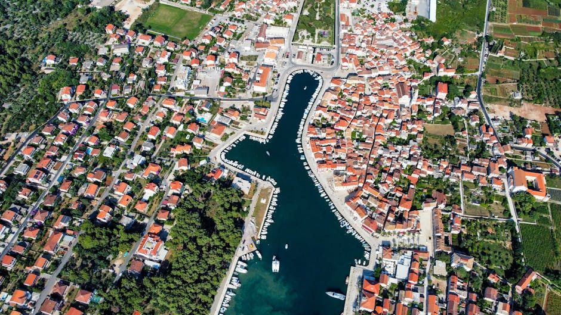
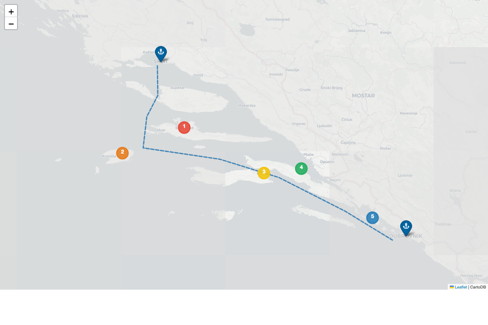
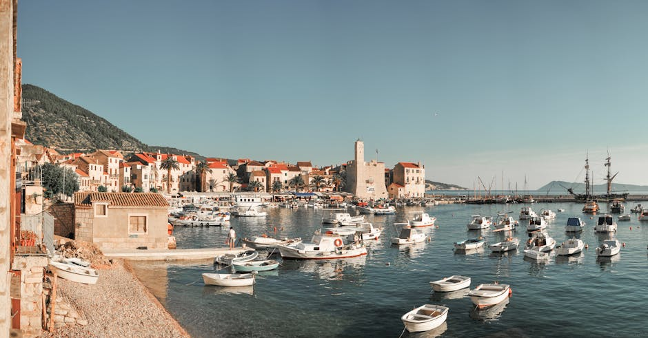
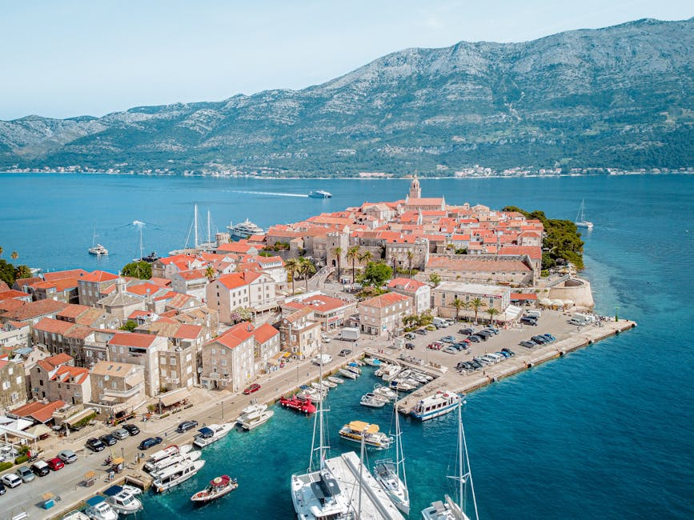
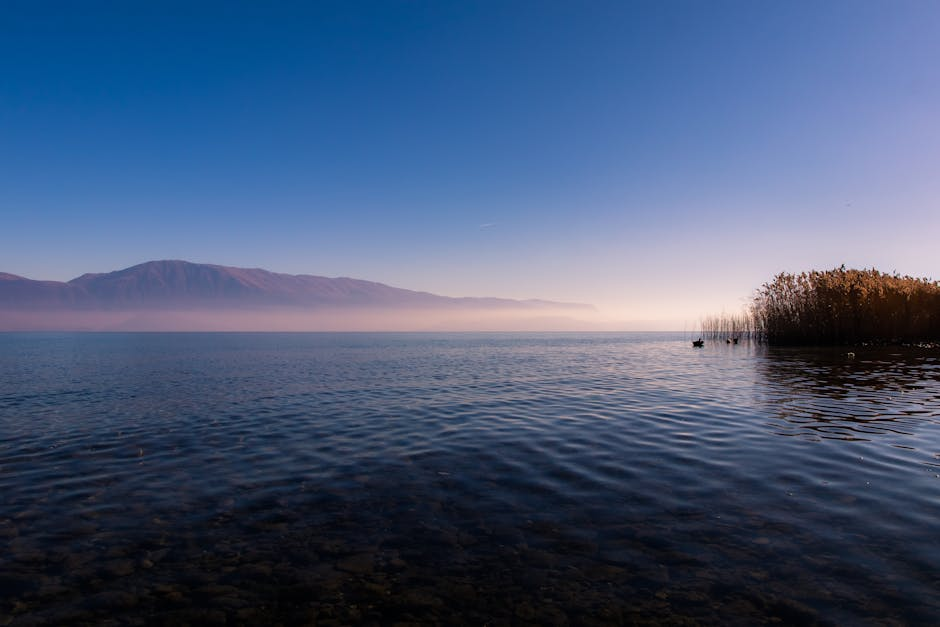
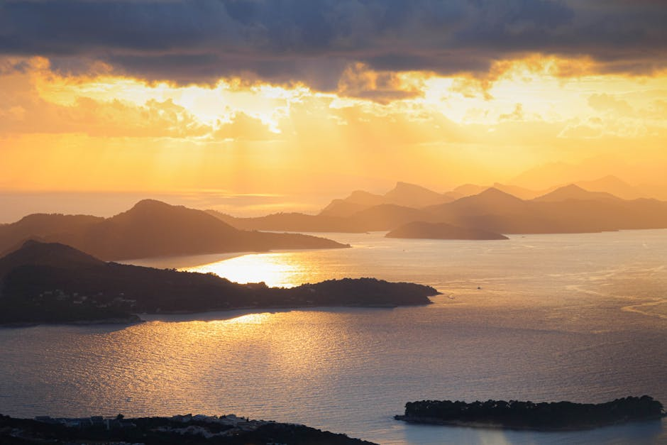

Good Vibrations · June–July 2026
21 days. Two offshore crossings. One guest week in the Ionian. A proper blue-water circuit — Croatia to Greece and back.

Route overview — Vrboska → Korčula → Mljet → Dubrovnik/Cavtat → Corfu → Paxos → Lefkada/Preveza (guest week) → Corfu → Dubrovnik → Lopud → Mljet → Korčula → Vrboska
16–19 Jun · 4 days
Vrboska → Cavtat
19 Jun–2 Jul · 13 days
Crossing + guest week + return setup
3 Jul · overnight
Corfu → Dubrovnik
4–6 Jul · 3 days
Dubrovnik → Vrboska
55ft Beneteau Oceanis · Yanmar 4JH4-TE · based in Vrboska, Hvar
The two crossings set the schedule. Everything else stays flexible around them.
Join ~23 Jun in Preveza area. Fly home ~30 Jun. Guest legs: relaxed, 15–25 nm/day.
June is generally good in the Ionian. Watch for Meltemi building from late June. Leave early on offshore days.
A proper first day: enough miles to feel like you've left, a beautiful destination to arrive at. Don't over-plan it — just sail well and enjoy Korčula in the evening.
Book the harbour berth ahead — it fills in summer. Korčula is worth a relaxed evening dinner ashore.
A calm, scenic leg that moves you south without overreaching. Polače gives you a quiet anchorage in a stunning national park setting — good rest before the push to Cavtat.
Polače is quieter; Pomena has more facilities. Both are beautiful. The park's salt lakes are worth a walk if you anchor early enough.

This is a staging day, not a sightseeing day. Get to Cavtat in good shape and use the afternoon to prepare for the crossing. Dubrovnik is tempting — only go there if you have a confirmed berth and don't mind the pressure it adds.
Lean towards Cavtat over Dubrovnik. Cavtat is calmer, marina is easier, and you want the boat — and the crew — rested before the overnight passage.

This is the hinge of the trip. Everything in Phase 1 exists to get you here in good shape. Do not leave on a mediocre forecast — a day's delay at Cavtat costs nothing. A bad crossing costs everything.
After a 155 nm overnight, this day is simple: arrive cleanly, check in, sleep. No heroics. The Ionian doesn't start until tomorrow.
Gouvia is the sensible choice. The Old Port is prettier but more complex after an overnight. Save the pretty arrival for when you're not tired.

The classic first Ionian day — a short, beautiful sail south to one of the loveliest anchorages in the Med. Take it easy.
Lakka is one of the best anchorages in the Ionian — a narrow inlet, crystal water, taverna on the quay. Don't rush through it.
A longer positioning day to get within easy reach of Preveza airport for guest pickup. Keep it simple — this isn't a scenic day, it's a logistics day.
Practicality over romance today. Dessimi Bay is calm and well-protected. Get there with time to sort the boat properly before guests board.
Guests fly in ~23 Jun, fly home ~30 Jun. This week is about easy, beautiful sailing — not covering ground. Keep legs in the 15–25 nm range. The Ionian delivers on its own; you don't need to work for it.
Prioritise short legs, swimming, good evenings ashore. Don't overload days with both a long passage and major sightseeing. The Ionian rewards patience — if a place is good, stay an extra night.
Two calm days to move the boat back to Corfu and prepare for the return crossing. Use Paxos as a pleasant stop, not a rushed transit. Arrive Corfu with a full day to rest and prepare.
Same rule as outbound: the crossing sets the schedule, not the other way around. If the forecast on Day 18 is poor, an extra day in Corfu is not a problem.
Same rules as the outbound crossing. The return leg tends to get less attention — resist that. After 2+ weeks of sailing, fatigue is a factor. Be more conservative, not less.
Same as the Corfu arrival — rest first. A Dubrovnik visit is possible if you genuinely want it and have the energy, but don't force it.
After a second overnight crossing, the first priority is rest. Dubrovnik will still be beautiful tomorrow morning.

A beautiful decompression day. Lopud is closer, gentler; Mljet is further but gives you the national park again. Either way: short leg, long swim, good evening.
Choose based on energy levels after the crossing. Lopud is the easier, more relaxing choice. Mljet is better if you have the legs for it.
The last leg home. Korčula is an optional lunch stop if you're not in a rush — it's worth it. Arrive Vrboska in the afternoon.
The last leg should feel easy and good. Don't skip Korčula — it's a lovely way to end a 21-day circuit.
Leave Cavtat only on a solid 36h forecast. A day's delay is free. A bad passage is not.
Don't make Day 3 a full Dubrovnik day AND a staging day. Pick one. Cavtat is the better staging choice.
Legs over 30 nm with guests add pressure. Keep most days short. Meganisi → Fiskardo → Ithaka is the sweet spot.
After 2+ weeks, you're more tired than you think. Apply the same weather discipline as the outbound leg — or stricter.
Keep 1 weather day buffer in Corfu on both outbound and return. Don't plan the crossing on the last possible day.
Top up at Cavtat before outbound crossing and at Preveza before guest week. Don't arrive at a crossing short on fuel.